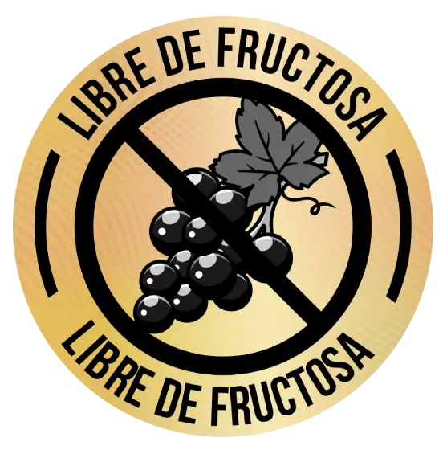

MISION
Desarrollar y ofrecer alimentos saludables, que contribuyan a la nutrición, salud y estilo de vida de nuestros clientes, por medio de estrictos controles y procesos estandarizados de producción que nos permiten garantizan la calidad, inocuidad, confiabilidad y legalidad de nuestros productos, esto lo logramos con la experiencia, pasión, compromiso, empeño y la excelencia de nuestros colaboradores.
VISION
Para el año 2025 continuar siendo la empresa líder en innovación y fabricación de alimentos saludables en el mercado nacional, ampliando nuestro portafolio a alimentos dietarios y posicionarnos en el mercado internacional, por medio de alianzas estratégicas, respaldados por nuestro sistema de gestión de calidad e inocuidad, el desarrollo de la competencia de nuestros colaboradores y la mejora continua de nuestros procesos.
POLITICAS DE CALIDAD
Nutramerican Pharma S.A.S está comprometida con el desarrollo y producción de alimentos saludables, que contribuyen a la nutrición, salud y estilo de vida de nuestros clientes.
NUTRAMERICAN ES CONFIANZA
¿SABES CUAL ES IDEAL PARA TI ?
TODOS NUESTROS PRODUCTOS SON LIBRES DE FRUCTOSA
TODOS NUESTROS PRODUCTOS SON LIBRES DE FRUCTOSA
VALORES CORPORATIVOS
- RESPONSABILIDAD
- RESPETO
- COMPROMISO
- HOESTIDAD
- MISION
- NUESTRA VISION
- POLITICA DE CALIDAD Esto lo logramos por medio de estrictos controles y procesos estandarizados de producción que nos permiten garantizar la calidad, inocuidad, confiabilidad y legalidad de nuestros productos. Nuestro equipo de trabajo está ampliamente capacitado y cuenta con la experiencia, pasión, compromiso, el empeño con la excelencia cimentados en una cultura de calidad e inocuidad alimentaria, satisfaciendo las necesidades y expectativas de nuestras partes interesadas, el cumplimiento de requisitos legales, normativos y de nuestros clientes, la comunicación interna y externa que soporta nuestro compromiso y asegurando la mejora continua de nuestro sistema de gestión.
ir a nutramerican.pharma